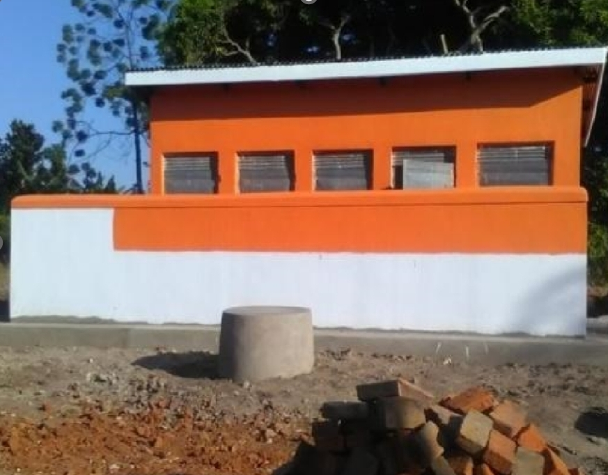
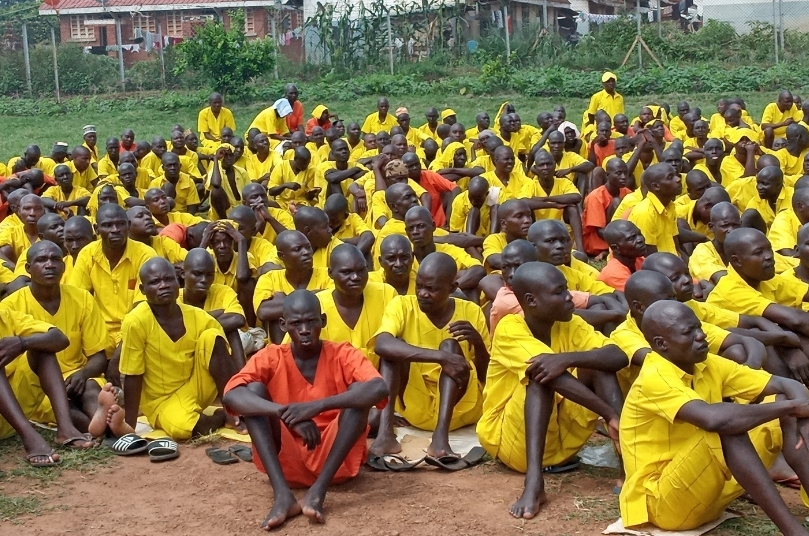
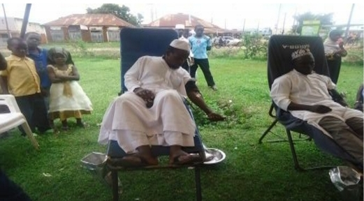

1.0 Organisational Background
Hope Worldwide International Uganda is registered as an indigenous non-profit organization limited by guarantee under s.371(1) of the Companies Act. It is also registered under the NGO registration statute 1989.
Core Focus Areas: Agriculture, Education, Health, Legal & Human Rights, WASH, Poverty Alleviation, and Development.
2.0 Summary of Achievements
Key Highlights
- Outreach: 81 awareness sessions reaching 4,200 males and 3,000 females (ABC+, MMC, PMTCT).
- WASH: 61 awareness sessions. 4,140 households visited. 19 boreholes cleaned/fenced. 261 tippy-taps constructed.
- Mother Clubs: 30 clubs formed. Mpongi Mother Club established a fish pond.
- PRA Sessions: 27 Participatory Rural Appraisal sessions in 7 districts reaching 865 persons.
- Networking: 19 stakeholder meetings (District Health, Water Aid, UNICEF, USAID).
- Monitoring: 624 sampled school visits.
- IEC Materials: 2,731 materials on mosquito nets (LLIN) and 1,932 on immunization calendars distributed.
- Capacity Building: 35 volunteers trained on Rights Based Approach (RBA).
3.0 Governance (Objective 1)
Objective: Strengthen governance and management capacity. A total of 363 meetings were held (cumulative) to discuss strategy (2020-2024), policies, and resource mobilization.
Policies Developed: Human Resource Policy, Financial Policy, Procurement Policy, 5-Year Strategy.
Meeting Breakdown
| Meeting Type | Total | Key Remarks |
|---|---|---|
| AGM | 01 | Adopted organizational policies & development ideas. |
| Staff | 22 | Quarterly planning & progress review. |
| Volunteers | 30 | Youth camps & community service planning. |
| BOD | 05 | Institutional development & strategy orientation. |
| Community | 118 | Child rights, sanitation, hygiene sessions. |
| Partners | 23 | District reviews (Health/Water). |
| Follow-up | 38 | CBHFA activities & school youth links. |
| TOTAL | 257* | *Specific reporting period subset |
4.0 Integrated Health (Objective 2)
Target: 300,000 children (0-5 yrs), adolescents, and women. Focus on the first 1000 days of life.
Activity 2.1: Hygiene Education
- Reach: 51 sessions targeting 6,720 pupils in 30 schools (Eastern Uganda).
- Health Clubs: 1,288 members trained (479 Male, 811 Female).
- Skills: Making re-usable sanitary pads and local soap.
- Impact: Boys supporting girls during menstruation; reduced stigma.
Activity 2.2: Participatory Monitoring
involved Parents, SMCs, and Local Government. Water user committees are now knowledgeable on roles.
Critical Challenge: High pupil-stance ratio (1:85 to 1:100) vs national standard (1:40).
5.0 WASH Infrastructure
Activity 2.3 & 2.6: Construction & Rehab
New Construction: 4 VIP pit latrines (5 stances each) funded by Ministry of Education.
Beneficiary Schools:
Rehabilitation:
- 17 Boreholes rehabilitated.
- 40 Water tanks rehabilitated.
- Access to water improved to within 0.5km distance.
Activity 2.5: Multi-Stakeholder Dialogue
19 meetings held with 1,330 participants (429 Male, 901 Female). Resulted in by-laws: Fines for vandalism (UGX 150k-200k) and animal grazing (UGX 30k-50k).
6.0 Agriculture & Livelihoods (Objective 4)
Objective: Improve food production for 140 households. Empower vulnerable households to adopt farming as a business.
Production Stats
| Group / Cluster | Production | Value Earned (UGX) |
|---|---|---|
| Kaliro Farmers | 10 Metric Tons (Pineapples) | 19,800,000 |
| Kamuli Cluster | 5,280 Tonnes (Pineapples) | 41,864,711 |
VSLA (Village Savings & Loans)
62 farmer groups trained. 67% women participants.
7.0 Humanitarian & Rights
Prison Outreach
Supported 190 beneficiaries (80 men, 110 women) across 2 prison stations. 250 sick inmates visited.
Supplies Distributed:
Blood Donor Recruitment
67 mobilization sessions held. Trained 110 inmates (50 male, 60 female) in counseling, theology, and leadership to reduce recidivism.
Advocacy (CVA)
Utilized Citizen Voice and Action (CVA) approach to advance access to education. 6 Radio dialogues held on Child Rights and WASH.
8.0 Lessons, Challenges & Way Forward
Lessons Learnt
- Partnership with Local Authorities is key for community entry.
- HIV stigma persists; people fear knowing their status.
- Teacher transfers disrupt School Health Clubs (need for continuous retraining).
Current Problems
- Transport: Lack of vehicles/motorcycles for volunteer field movement.
- Sanitation: Severe pupil-stance ratio gap (1:100). Latrine emptying is a challenge.
- Funding: Limited funds for some planned activities.
Recommendations & Way Forward
- Purchase of vehicles/motorcycles is critical.
- Develop initiatives for local resource mobilization.
- Lobby for increased budget allocation for school WASH.